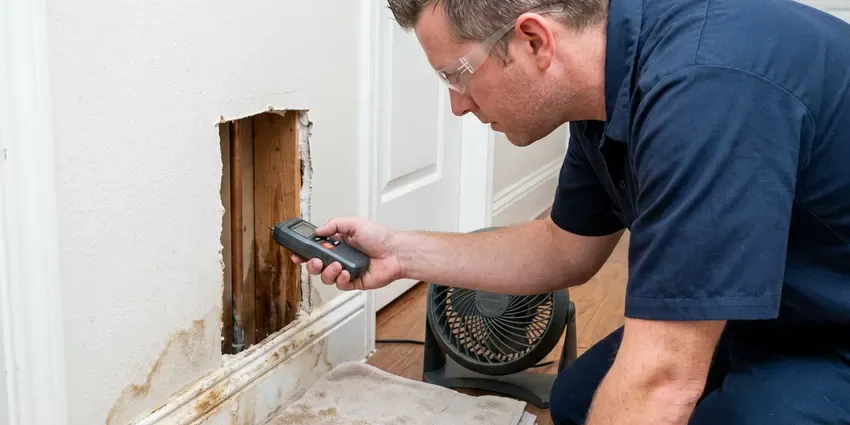

Backflow Preventer in Memphis, TN
Backflow test notice on the counter in Memphis, TN? BGV Plumbing tests the assembly, rebuilds it if it does not pass, and files the report.
- Same-Visit Retests
- Calibrated Test Gauges
- Rebuild Kits on the Truck
- RPZ, PVB and DCVA Service

Test Notice in the Mail? Book It in Memphis, TN.
Our certified testers bring gauges and rebuild kits, so most failures get fixed on the same trip.
Your Local Backflow Preventer Testers in Memphis, TN
BGV Plumbing sees the same few backflow failures every week in Memphis, TN. A pebble under a check seat, a torn relief valve diaphragm or a spring that has lost its tension will all fail a test. Most are fixable. Rebuild kits ride on the truck, which means repair and retest usually happen the same day.
Work we handle every week:
- Assemblies for irrigation, fire and domestic lines
- Certified backflow testing and reporting
- New backflow installation for irrigation, fire and commercial lines

Additional Plumbing Maintenance Services in Memphis, TN
Our maintenance and specialty plumbing services in Memphis, TN protect your home year-round and extend the life of every system.


Customers
Why Choose BGV Plumbing for Backflow Preventer in Memphis, TN?
A backflow event usually starts with something ordinary, a main break down the street or a fire truck pulling hard from a hydrant. When main pressure falls, water sitting in your sprinkler pipes or boiler loop can siphon back toward the street. That is the job of the assembly.
- Certified Testers, Our technicians hold current backflow tester certification and test devices every week.
- No Surprise Shutoffs, Tests filed on time keep the water provider from shutting off service.
- Clean Water, Keeps fertilizer, pool chemicals and boiler water from flowing back into your drinking supply.
Citywide Coverage
Backflow testers from BGV Plumbing cover every part of Memphis. Downtown commercial buildings and quiet residential streets both get on the schedule, often within a few days of your call. We group nearby tests.
Experienced Team
The BGV Plumbing team includes certified testers who focus on backflow work. Accurate readings come from good habits, like bleeding air from the hoses and holding each reading long enough to see if it drifts. Speed is not the goal.
Safety-First Approach
Installations follow the plumbing code and your water provider's cross-connection program. Permits get pulled when required, and each new assembly is tested before it starts working. That initial report goes in too.
Trusted Certified Memphis Plumbing Services Professionals
At BGV Plumbing, we are proud to offer certified plumbing services throughout Memphis, TN. Those papers on the wall mean something. Every repair, install and maintenance visit follows strict safety and quality rules, and the plumbers doing the work carry recognized industry credentials.
Call Us Now PHCC Plumbing Contractor Recognition
PHCC Plumbing Contractor Recognition Better Business Bureau (BBB) Accreditation
Better Business Bureau (BBB) Accreditation Angi Certified Pro
Angi Certified Pro ISO 9001 Quality Management Certification
ISO 9001 Quality Management CertificationLicensed Backflow Preventer Work in Memphis, TN
Backflow Preventer Testing in Memphis
Many Tennessee water providers require a yearly test on every testable assembly. A calibrated gauge goes on the test cocks, and we read the drop across each check and the point where the relief valve opens. Each reading has a minimum. RPZs, double checks and PVBs all get tested, and the report goes to your provider.

Backflow Repair vs. Replacement Cost in Memphis, TN
Rebuilding a failed assembly is usually the cheaper choice. A new assembly is the better call when the body is cracked, the parts are no longer made or the device does not match the hazard. We price both on site. The choice is yours.
Reduced Pressure Zone Assembly Service in Memphis, TN
RPZ assemblies protect against high-hazard cross-connections at restaurants, medical offices, car washes and buildings with chemical feed. Two independent checks sit on either side of a relief valve, which opens and discharges water when a check fails. That discharge needs a drain. We install, test and rebuild RPZ units from Watts, Febco, Wilkins and Apollo.
Commercial Backflow Services in Memphis, TN
Commercial buildings in Memphis often have several assemblies on separate lines. One building can easily have an RPZ on domestic water, a double check on the fire line and a PVB on the sprinklers, all due at different times. We track them together. Testing early in the morning keeps the water shutoff from landing during business hours.
Fire Line Backflow Testing in Memphis
Fire sprinkler systems usually use a double check or double check detector assembly to keep stagnant fire line water out of the public main. These assemblies need regular testing, often lined up with the fire system inspection so the building only loses water once. We document every result. Your fire protection contractor and our tester can share the same morning.
Febco Backflow Preventer Experts in Memphis
Febco assemblies are common on irrigation and commercial lines. We work on the 765 pressure vacuum breaker, the 850 double check and the 825Y and 860 reduced pressure assemblies. Every model has quirks. Air inlet poppets fail on the 765, and relief diaphragms are the weak spot on the 825Y.
Backflow Preventer Repair and Rebuild in Memphis, TN
Worn check rubbers, grit under a seat and a relief valve that drips are the common failures. The assembly gets isolated and opened, each seat gets cleaned, and the worn parts are replaced from the factory kit. A retest follows. Rebuilding usually costs much less than replacing the whole assembly.

Commercial Backflow Compliance in Memphis
Commercial properties may have assemblies on domestic water, irrigation, fire lines and equipment. All test dates go into our tracking, we bundle them into fewer visits, and the reports go in as soon as testing wraps. You receive a status sheet. Notices stop being a surprise.
Backflow Preventer Near Me in Memphis, TN
Looking for backflow testing near you in Memphis, TN? BGV Plumbing has certified testers working locally, with gauges and rebuild kits in every truck. Short drives mean quicker tests. We know where assemblies usually sit on local lots, beside the meter, in a front bed or on the wall of a mechanical room.
Our certified testers work locally and can often schedule tests within a few days of your notice. That gives you time to make repairs before the deadline if the assembly does not pass on the very first try. Reminders come yearly.
BGV Plumbing at a Glance
- Fully licensed plumbing team covering Memphis, TN
- 24/7 emergency service with same-day scheduling
- Upfront, flat-rate pricing before work begins
- 4.9-star rated by 932+ Tennessee customers
Memphis Map
Memphis Information
- Population
- 618,639
- Area codes
- 901/865/501
- Service area
- Memphis and towns within a 40 mile drive
- Nearby
- Bartlett, Collierville, Jackson, Spring Hill
Every sprinkler system in Memphis, TN is a cross-connection, and a working backflow preventer is what keeps lawn water and fertilizer out of the drinking supply.
Talk to a Plumber
Reach out to BGV Plumbing for honest, reliable plumbing from people who know the trade in Memphis, TN.
Our Specialized Plumbing Services in Memphis, TN
At BGV Plumbing, you get every kind of plumbing service from one company across Memphis, TN. From leak detection to full system installs, our team works fast and charges fair prices on homes and commercial properties alike. Here are the core services we offer:


How a Backflow Test Works in Memphis, TN
Here is how we handle testing, repairs and reporting from start to finish.
Call or Send the Notice
Call (615) 518-0893 or send us your test notice. We ask what kind of assembly you have and set a time.
On-Site Test
A certified tester comes to your Memphis property, finds the assembly and runs the test with a freshly calibrated gauge.
Repair and File
If it fails, we rebuild or replace it and retest. The passing report goes to your water provider, following Tennessee code and the factory specifications.
Frequently Asked Questions About Backflow Preventer in Memphis
A standard backflow test in Memphis, TN usually runs $75 to $150. Rebuilds tend to fall between $200 and $600 depending on which parts fail, while a new assembly can run $450 to $1,500 or more on a larger commercial line. Size drives the price. You get a quote before any work starts.
A brass assembly often lasts 10 to 20 years, sometimes longer. The rubber parts inside wear out much sooner, which is why rebuild kits exist and why most failed tests are fixed without replacing the body. Freezes shorten that life.
Once a year is the usual requirement. Installation, repair and relocation can each trigger a test too. Your provider's notice will list the deadline, and we can usually test within a few days of seeing it, sometimes sooner.
Watts, Febco, Zurn Wilkins, Apollo and other common brands. Our trucks carry rebuild kits for the popular models. Rare parts usually ship within a few days, and we book the repair as soon as they show up.
No, testing and repair have to be done by a certified backflow tester. Plumbing work above certain thresholds requires a state licensed contractor, and BGV Plumbing handles permits so homeowners do not have to sort it out alone. Reports from uncertified people get rejected. An incorrect rebuild can leave the water unprotected for a year before the next test catches it.
Ten to twenty years is common for a well-kept brass assembly. Water quality, weather exposure and the type of device all affect how long the body and the internal parts hold up. Pipes in crawlspaces, exterior walls and attics are the most at risk during a cold snap, especially where insulation is thin or missing. Testing catches wear early.
Parts and labor on backflow repairs and installs are warrantied by BGV Plumbing. The manufacturer covers the valve itself, and we handle registering it. Terms are on your paperwork.
Water dripping or running from the relief valve on an RPZ is the clearest sign. Low pressure at the house, a cracked bonnet after a freeze or water that tastes or smells off can also point to the assembly. Get it tested soon.
What People Are Saying About Our Plumbing Experts?

Greg S.
I manage a small strip center with six tenants. BGV Plumbing handles our annual backflow testing and fixed a recurring clog in the shared sewer line that had been backing into the nail salon. Their reports come in clean and on time.
Commercial Plumbing · Spring Hill, TN
Angela D.
Our sump pump quit during a storm and the water was an inch from the basement carpet. BGV Plumbing put in a new pump with a battery backup that same evening. We have had two heavy rains since. It kicked on both times.
Sump Pump · Collierville, TN
Marcus H.
Grease from the fryer line kept clogging the kitchen drain at my diner. BGV Plumbing hydro jetted the line after closing, showed me the buildup on camera, and set us up on a quarterly cleaning so it does not catch us on a Friday again.
Drain Cleaning · Clarksville, TN
Monica A.
Our water bill nearly doubled in one month with no change in how we used water. The tech checked the meter, heard the leak under the hallway with his equipment, and opened a hole about a foot square. Fixed the same day.
Slab Leak Repair · Collierville, TNKaren W.
After our third pinhole leak in copper, we stopped patching. BGV Plumbing gave us a written plan room by room and repiped the house in PEX while we stayed in it. The crew covered our floors every morning and cleaned up every night.
Repiping · Franklin, TNKevin O.
Before buying our house I paid for a sewer camera inspection. BGV Plumbing found a belly in the line that held standing water about forty feet from the cleanout. We used the video to get the sellers to fix it before closing.
Sewer Camera Inspection · Jackson, TN